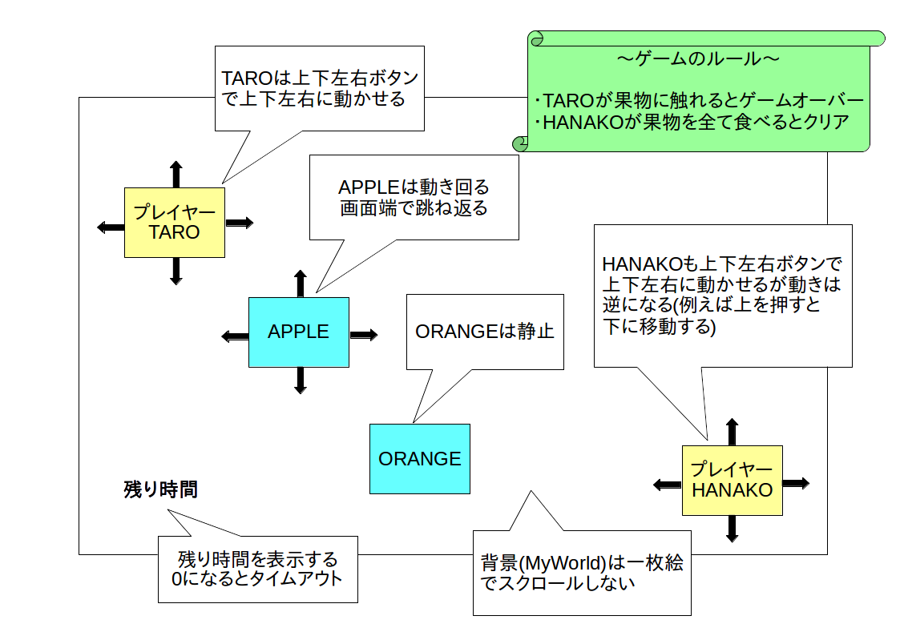

1 スプリント ＝ 20 分
※ クリックすると図だけ表示します。

ここからはミニゲームの開発を通じてオブジェクト指向開発を実際に体験してみようと思います。
Windows 版 (Windows10,32 bit版で動作確認)
Linux 版 (Ubuntu 16.04 LTSで動作確認)
※ いらすとやの画像素材を利用させて頂いています。
※ 画面サイズは 1024 x 768、Windowed モードで最適になるように作っています。
要求仕様書は以下の通りです。
| 名称 | TARO と HANAKO |
| 用途・目的 | 暇つぶし用ミニゲーム |
| 対象ユーザ | 6 歳以上の男女 |
| システム構成 |
OS: Windows 又は Linux
PC: 低スペック 開発環境: Greenfoot |
| 概要 |
・PC 上で動く 2 次元アクションゲーム
・ボタン(ゲームパッドやキーボード)で操作 ・画面上に TARO と HANAKO というプレイヤーキャラクターと複数の果物を表示する ・重力は無し ・ユーザーは上下左右ボタン操作により TARO と HANAKO を動かせる ・TARO が果物に触れたらゲームオーバー ・HANAKO が制限時間内に画面上の全ての果物を食べたらゲームクリア ・動きまわる果物もある |
ゲーム仕様は以下のように策定しました。
・背景(MyWorld と名付ける)は一枚絵とし、スクロールしない
・ゲーム開始時の TARO の初期位置は画面左上
・ゲーム開始時の HANAKO の初期位置は画面右下
・TARO は上下左右ボタンで上下左右に動かせる
・HANAKO も上下左右ボタンでで上下左右に動かせるが動きは逆になる(例えば上を押すと下に移動する)
・TARO と HANAKO 間に当たり判定は無い(スレ違い可能)
・TARO と HANAKO は画面外に移動できない
・果物には APPLE と ORANGE がある
・ゲーム開始時に APPLE と ORANGE をランダムな位置に複数個表示する
・APPLE は動きまわる。画面端で跳ね返る。
・ORANGE は静止している
・TARO が果物に触れたらゲームオーバーとなりメッセージ表示
・HANAKO が果物に触れたら食べたことにして果物を消す
・HANAKO が画面上全ての果物を食べたらゲームクリアとなりメッセージ表示
・時間制限を設け、時間内に全ての果物を消せなかったらタイムアップとなりメッセージ表示
・残り時間は画面左下に表示
画面仕様図は以下の通りです。

Unity はオブジェクトをベースとした開発環境(いわゆるプロトタイプベース)ですので、今回はクラス設計は行わず、オブジェクト設計だけを行います(※)。
※ もっともスクリプト(C#)はクラスベースのプログラミング言語なので、規模が大きいゲームの場合はスクリプトのクラス設計もきちんとした方が良いです。
| オブジェクト名 | 内容 |
|---|---|
| MyWorld |
・背景
・キャラクターの初期配置やタイムアップ処理などのマネージャー処理も行う |
| TARO |
・プレイヤーキャラ その 1
・ボタン操作(上下左右移動)を行う ・果物に触れたらゲームオーバー処理を行う |
| HANAKO |
・プレイヤーキャラ その 2
・ボタン操作(上下左右移動)を行う。たたじ動きをTAROと反転させる ・果物に全て触れたら果物を消し、全て消したらゲームクリア処理を行う |
| APPLE |
・果物 その 1
・適当に動く |
| ORANGE | ・果物 その 2 |
WBS は以下の通りです。バックログも中に含まれています。